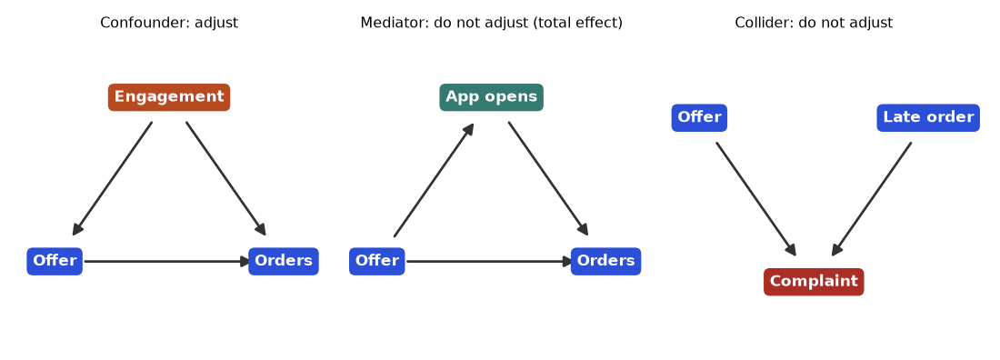
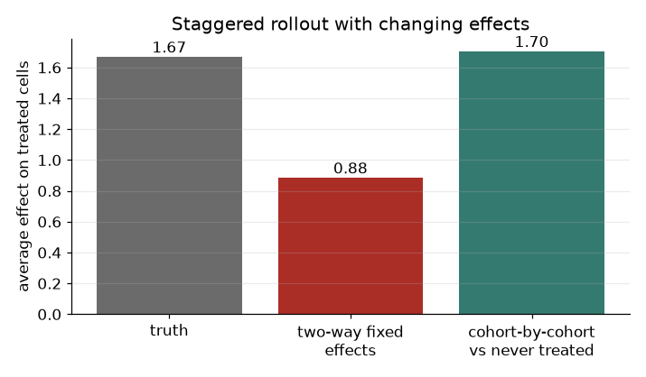
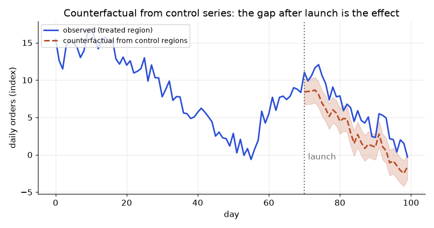

Chapter 7 gave you the gold standard: flip a coin. But often you cannot. You cannot randomly decide which stores get a new delivery fee because the regional head already picked them. You cannot randomly deny loans. The offer was sent last month to the customers someone thought were at risk, and now the CEO asks "did it work?". The data is observational: you watch what happened, you did not control it. The danger is confounding: the people who got the treatment differ from those who did not, in ways that also change the outcome. This chapter teaches you to name the problem with a picture (a DAG), to fix it with a fair-comparison method that fits your situation, and to state the assumptions each method needs. By the end you will pick the right tool for a given business question and know how to test it for obvious failure. Everything below is synthetic with fixed seeds, so we KNOW the true answer and can see whether each method finds it.
Running example. Churn offers, again. A retention offer is sent mainly to customers with low engagement. We want its effect on "orders in next 30 days" (1 = ordered). Later sections reuse the same business world with stores, cities and credit scores.
Most code here uses numpy, pandas, scikit-learn and scipy. Specialised libraries (DoWhy, EconML, CausalML, linearmodels, statsmodels) wrap the same ideas; they were not installed here, so we wrote the steps by hand. That is better for learning anyway.
| Word | Plain meaning | In our churn example |
|---|---|---|
Treatment T | The action you did or did not take | Offer sent (1) or not (0) |
Outcome Y | What you measure afterwards | Ordered within 30 days |
Potential outcomes Y(1), Y(0) | What would happen to the same person with and without the treatment | Would Asha order with the offer? Without? |
| Fundamental problem | For one person we see only one of Y(1), Y(0) | Asha got the offer; we never see her without it |
| ATE | Average treatment effect over everyone: E[Y(1) − Y(0)] | Average lift if we gave the offer to all |
| ATT | Effect on those actually treated | Lift among customers who got the offer |
| CATE | Effect for a subgroup or type of customer | Lift for low-engagement customers |
| Confounder | Causes both T and Y | Engagement |
| Mediator | Lies on the path T → M → Y | Offer causes app opens, app opens cause orders |
| Collider | Caused by two things: A → C ← B | "Customer called support" is caused by both bad delivery and low patience |
A DAG (directed acyclic graph) is a drawing with arrows for "causes". Directed means arrows have a direction. Acyclic means no loops.
Engagement (confounder)
/ \
v v
Offer (T) -----------> Orders (Y)
\
v
App opens (mediator) ---> Orders (Y)The backdoor rule. A "backdoor path" is any path from T to Y that starts with an arrow INTO T. Here: T ← Engagement → Y. This path carries a false (non-causal) association. To get the true effect, block every backdoor path by adjusting for (holding fixed) a variable on it, without opening a new one.
What to adjust for:

How to read it: an arrow means "causes". Left: the orange node sends arrows into both offer and orders, so it creates a false link and you must adjust for it. Middle: the teal node sits on the path from offer to orders, so adjusting for it removes part of the real effect. Right: the red node receives arrows from two causes, so adjusting for it (or filtering on it) invents a link between them.
Problem 8.1.1 (tiny numbers, by hand) 1,500 customers in two engagement groups.
| Group | Offer | Customers | Order rate |
|---|---|---|---|
| Low engagement | yes | 800 | 0.30 |
| Low engagement | no | 200 | 0.20 |
| High engagement | yes | 100 | 0.70 |
| High engagement | no | 400 | 0.60 |
We simulate 20,000 customers. Engagement eng is a number (a standard normal). Low engagement raises the chance of getting the offer. High engagement raises the chance of ordering. The offer truly adds 0.4 to the log-odds of ordering. Because we built the data, we can compute the true ATE: +8.15 points.
import numpy as np
from sklearn.linear_model import LogisticRegression
sig = lambda x: 1/(1+np.exp(-x))
rng = np.random.default_rng(0); N = 20000
eng = rng.normal(0, 1, N)
t = (rng.random(N) < sig(-0.3 - 1.2*eng)).astype(int) # low eng -> more offers
y = (rng.random(N) < sig(-0.5 + 1.0*eng + 0.4*t)).astype(int)
print(y[t==1].mean() - y[t==0].mean()) # naiveReal output (full script outputs are collected below):
true ATE +0.0815
naive difference -0.1175 (treated mean engagement -0.51, control +0.41)The naive method says the offer lowers orders by 11.7 points when it raises them by 8.2. The treated group has engagement 0.92 standard deviations lower than the control group.
Colliders, a quick demonstration. a and b are independent. c = a + b + noise. Corr(a,b) = 0.012. If you restrict to cases with c > 1 (that is, "adjust for the collider"), Corr(a,b) becomes −0.50. In business: among customers who contacted support (the collider), bad delivery and low patience look negatively linked, even though they are unrelated overall.
Before any model, draw the DAG on paper with the PM and the domain expert. It forces the question "what else drives both the decision and the outcome?" and shows which columns you must NOT put in the regression.
Check yourself
Definition. e(x) = P(T = 1 | X = x). Estimate it with logistic regression (or a tree model). Then you can:
1/e and controls by 1/(1−e). This builds a pseudo-population where treatment is independent of X.Two checks are mandatory.
SMD = (mean₁ − mean₀) / √((var₁ + var₀)/2). A common rule: absolute SMD below 0.1 is good.Problem 8.2.1 (hand check of IPW, same table as 8.1.1) Propensity: Low group 800/1,000 = 0.8, High group 100/500 = 0.2.
| Step 1 | Weights: treated-Low = 1/0.8 = 1.25. Treated-High = 1/0.2 = 5. Control-Low = 1/(1−0.8) = 5. Control-High = 1/(1−0.2) = 1.25. |
|---|---|
| Step 2 | Weighted treated rate = (800×1.25×0.30 + 100×5×0.70) / (800×1.25 + 100×5) = (300 + 350) / (1,000 + 500) = 0.4333. |
| Step 3 | Weighted control rate = (200×5×0.20 + 400×1.25×0.60) / (200×5 + 400×1.25) = (200 + 300) / 1,500 = 0.3333. |
| Answer | IPW effect = 0.4333 − 0.3333 = +0.10, matching the stratified answer. |
| Check | After weighting, Low is 1,000 of 1,500 customers in BOTH groups (two thirds), and High is 500 of 1,500. The groups now have the same mix. |
| Why it matters | IPW is just "reweight so the groups look alike". |
Problem 8.2.2 (the 20,000-customer data) Estimate the ATE with four methods.
ps = LogisticRegression(C=1e6).fit(eng.reshape(-1,1), t).predict_proba(eng.reshape(-1,1))[:,1]
w = t/ps + (1-t)/(1-ps)
ipw = np.sum(w*t*y)/np.sum(w*t) - np.sum(w*(1-t)*y)/np.sum(w*(1-t))Real output:
True ATE +0.0815
Naive -0.1175
Regression adjustment (logit) +0.0773
IPW +0.0836
Doubly robust (AIPW) +0.0785
Stratified, 5 propensity bands +0.0646
Propensity range 0.007 to 0.989 (1st/99th pct 0.046 / 0.924)
SMD of engagement -1.045 before, +0.036 after weightingDoubly robust (AIPW). It combines an outcome model and a propensity model. If EITHER one is right, the estimate is still correct. That is why it is popular. Double machine learning (DML) extends the idea: use flexible ML models for both parts, with cross-fitting (fit on one fold, predict on the other) so overfitting does not bias the effect. EconML and DoWhy implement it.
Limits. Propensity methods only fix measured confounders. If the real driver is something you did not record (motivation, say), no propensity score can fix it. Sensitivity analysis asks "how strong would an unmeasured confounder have to be to erase my result?" A well-known summary is the E-value. Always run one before you present a causal claim from observational data.
Propensity scores and IPW are the standard first approach at companies for "did the campaign work" when no holdout was kept. Also, the same weighting idea is used to correct selection bias in recommender evaluation (Chapter 10) and reject inference in credit scoring.
Check yourself
Definition. Difference-in-differences (DiD) compares the before-to-after change in a treated group with the before-to-after change in an untreated group:
DiD = (Treated_after − Treated_before) − (Control_after − Control_before)The key assumption is parallel trends: without the treatment, both groups would have moved in the same way. The groups may start at different levels. They must not drift at different speeds.
Running example. 20 stores, 12 weeks. Ten stores (treated) get a new delivery-fee policy in week 7. We simulate weekly sales per store. The treated stores are bigger (+15), all stores grow +0.8 per week, and the true effect is +6.
m = df.groupby(['treat','post']).y.mean().unstack()
did = (m.loc[1,1]-m.loc[1,0]) - (m.loc[0,1]-m.loc[0,0])Real output:
post before (weeks 1-6) after (weeks 7-12)
control stores 97.58 103.25
treated stores 117.26 127.50Problem 8.3.1 Compute the DiD and compare with two wrong shortcuts.
| Step 1 (naive: after only) | 127.50 − 103.25 = 24.24. Wrong, because treated stores were already 19.7 higher. |
|---|---|
| Step 2 (before-after for treated only) | 127.50 − 117.26 = 10.23. Wrong, because it includes the growth that all stores had (5.68). |
| Step 3 (DiD) | Treated change = 127.50 − 117.26 = 10.23. Control change = 103.25 − 97.58 = 5.68. DiD = 10.23 − 5.68 = 4.56. |
| Step 4 (regression form) | y = a + b·treat + c·post + d·treat×post. The coefficient d = 4.557, the same number. This form lets you add controls and clusters. |
| Answer | The policy raised weekly store sales by about 4.6 units. The truth is 6.0. The cluster bootstrap (resample stores, 500 times) gives a 95% CI of 3.04 to 5.98, so the truth sits right at the top edge of the interval. This is ordinary sampling noise with only 10 stores per group, and a good reminder that DiD with few units is imprecise. |
| Check | Naive 24.2 and 10.2 are far from 6, while DiD at 4.6 is not. The ordering of errors is what we expected. |
| Why it matters | DiD removes both fixed differences between groups (stores differ in size) and common time shocks (everyone grew). |
Testing parallel trends. You cannot test the assumption AFTER treatment, but you can look at the pre-period.
gap
| ___________ after: gap jumps
| ___ ___ _/
| / \_/ before: flat, no trend
+-------------------------> week (policy starts at the vertical line)Interrupted time series is the cousin for the case with no control group: fit the pre-trend, project it forward, and treat the difference as the effect. It is weaker because anything else that changed at that moment gets blamed on your policy.
DiD is the workhorse for policy-style launches: store pilots, city-level pricing, a new regulation, a deployment applied to some regions first. Libraries: linearmodels, statsmodels.
Check yourself
Definition. Find non-negative weights w over the donor units that add to 1, such that the weighted donor average matches the treated unit's PRE-treatment series as closely as possible. Then forecast the treated unit's no-treatment path with those weights. Effects are the post-treatment gaps.
Problem 8.4.1 15 donor cities, 30 months, launch at month 20 in one treated city. By construction, the treated city's no-launch path is a mix of donors 0, 3 and 7 with weights 0.5, 0.3, 0.2, and the launch adds +8. Fit the weights using months 1 to 20 only.
from scipy.optimize import minimize
res = minimize(lambda w: np.sum((treated_y[:20] - donors[:20] @ w)**2),
np.ones(J)/J, bounds=[(0,1)]*J,
constraints={'type':'eq','fun': lambda w: w.sum()-1}, method='SLSQP')Real output (weights above 0.01 only):
donor 0: 0.57 donor 12: 0.17 donor 6: 0.08 donor 7: 0.07 donor 3: 0.04 donor 4: 0.04 donor 13: 0.02
pre-period RMSE 0.431
mean post gap +7.56 (true effect +8)
pre-period gap sd 0.428Limits. You need a good pre-period fit, enough donor units, and no donor affected by the launch. If the pre-period fit is poor, do not use the method.
Check yourself
Definition. Regression discontinuity (RD) uses a treatment rule that depends on a cut-off in a "running variable" (the score). Fit a line on each side of the cut-off within a narrow window, and read the jump at the cut-off. Assumption: people cannot precisely control which side they land on, and everything else changes smoothly across the cut-off.
Problem 8.5.1 6,000 customers, scores uniform between 550 and 750. Spend = 20 + 0.05(score − 650) + 7·(offer) + noise (sd 6). The offer goes to score ≥ 650. True jump: 7.
| Step 1 (naive) | Mean spend above 650 minus below 650 = 12.0. Wrong, because higher-score customers spend more anyway (the 0.05 slope). |
|---|---|
| Step 2 (local linear, window ±20) | 1,189 customers in the window. Model spend = a + b·above + c·(score−650) + d·above·(score−650). Estimated jump b = 6.32, standard error 0.71. |
| Step 3 (sensitivity to window) |
window ±5 (n=282) jump 7.15
window ±10 (n=574) jump 6.99
window ±20 (n=1189) jump 6.32 (se 0.71)
window ±40 (n=2431) jump 7.00The result is local: it applies to customers near 650, not those at 550 or 750. Check for manipulation: if staff nudge scores just above the cut-off, there will be a suspicious pile-up of customers right above 650. A histogram of the score shows this.
Check yourself
Three conditions for an instrument Z:
The Wald estimator: effect = (effect of Z on Y) / (effect of Z on T). Two-stage least squares (2SLS) generalises this: stage 1 regress T on Z, stage 2 regress Y on the predicted T.
Problem 8.6.1 30,000 customers. Hidden motivation u. SMS z is random. Auto-pay d depends on z and u. Repayment score y = 3 + 2.0·d + 1.5·u + noise. The true effect of auto-pay is 2.0.
ols = np.polyfit(d, yv, 1)[0]
first = np.polyfit(z, d, 1)[0] # effect of SMS on auto-pay
reduced= np.polyfit(z, yv, 1)[0] # effect of SMS on repayment
wald = reduced / firstReal output:
OLS (naive) 3.549
first stage 0.2316 (SMS raises auto-pay uptake by 23.2 points)
reduced form 0.4949
Wald = 0.4949/0.2316 2.136
2SLS by hand 2.136
first-stage F 1,725IV gives the effect for compliers, customers who are moved by the instrument (the LATE, local average treatment effect), not for everyone.
Check yourself
Customers fall into four types:
| Type | Without offer | With offer | Action |
|---|---|---|---|
| Persuadable | no order | order | Target |
| Sure thing | order | order | Do not waste discount |
| Lost cause | no order | no order | Do not target |
| Sleeping dog | order | no order | Never target |
A standard churn or purchase-propensity model finds "sure things" and ignores the rest. Uplift models need randomised (or well-adjusted) data and estimate τ(x) = P(Y=1 | T=1, x) − P(Y=1 | T=0, x).
Meta-learners turn any classifier into an uplift model:
T as a feature; uplift = prediction with T=1 minus T=0. Simple, but can ignore T.EconML, CausalML).Problem 8.7.1 40,000 customers, randomised offer. Order probability sig(−1 + 0.8·x1 + t·1.2·x2), so customers with x2 > 0 are helped and x2 < 0 hurt. Train a T-learner on the first half (gradient boosting), score the second half (20,000), and evaluate honestly with the randomised treatment flag.
m1 = GradientBoostingClassifier(random_state=0, max_depth=2, n_estimators=100).fit(X[tr&(t==1)], y[tr&(t==1)])
m0 = GradientBoostingClassifier(random_state=0, max_depth=2, n_estimators=100).fit(X[tr&(t==0)], y[tr&(t==0)])
uplift = m1.predict_proba(X[te])[:,1] - m0.predict_proba(X[te])[:,1]Real output (customers sorted by predicted uplift, split into 10 equal groups):
decile est_uplift treated ctrl observed_uplift
1 0.450 0.710 0.268 +0.441
2 0.281 0.614 0.338 +0.276
3 0.174 0.498 0.372 +0.126
4 0.095 0.371 0.294 +0.078
5 0.032 0.279 0.252 +0.027
6 -0.013 0.183 0.224 -0.042
7 -0.061 0.150 0.216 -0.066
8 -0.113 0.143 0.273 -0.130
9 -0.178 0.136 0.322 -0.185
10 -0.303 0.133 0.425 -0.293The Qini curve is the uplift version of a lift chart: sort customers by predicted uplift and plot the cumulative extra orders (treated orders minus the scaled control orders) as you widen the target group. On our test half, the curve peaks at about 50% of customers with +962 incremental orders, and falls to +249 at 100% (that equals treating everyone). Treating the bottom half destroys 713 orders.
Uplift is the answer to "who should get the retention offer?" (the framing from Chapter 1.3). Combined with costs (expected-value thinking, later in this document), it picks the customers where uplift × margin − offer cost is positive.
Check yourself
Section 8.7 introduced uplift with one T-learner on randomised data. Real life is harder in two ways. First, the treatment is often NOT randomised, so the model must also handle confounding. Second, you need to know which learner to trust. Here we put four estimators on one dataset where we know the true individual effect, and score each by how close it gets.
τ(x) answers "for whom?". Each learner is a different way to get τ(x) out of ordinary prediction models: S puts treatment inside one model, T fits two models, X patches T's weakness when groups are unequal, and double ML first removes everything that confounding could explain, then fits the leftover.| Learner | Recipe | Strength | Weakness |
|---|---|---|---|
| S | One model of y on x and t. Effect = prediction with t=1 minus t=0. | Simple, uses all data | A regularised model can shrink the t effect to zero |
| T | Separate models for treated and control. Effect = difference. | Cannot ignore t | Noisy when one arm is small; the two errors do not cancel |
| X | Impute each person's missing outcome with the other arm's model, fit models on those imputed gaps, blend using the propensity e(x). | Better when arms are unequal | More steps; needs a good propensity |
| Double ML | Predict y from x and t from x using cross-fitting. Regress the y residual on the t residual. | Robust to confounding that models can capture; has a standard error | Needs enough overlap; the effect form you regress on is a modelling choice |
Problem 8.8.1 20,000 customers. Engagement x1 drives who gets the offer (confounding). The true effect is τ = 1 + 1.5·x2, so it depends only on x2. Compare naive, S, T, X and double ML.
| Setup | y = 2·x1 + x2 + τ·t + noise. Offer chance is sig(0.8·x1). True average effect is 1 because x2 has mean 0. |
|---|---|
| Naive | Treated customers have higher x1 and so higher y. The raw gap will be far above 1. |
| Cross-fitting | Split in halves. Fit the nuisance models on one half, predict the other half, and swap. This stops a flexible model from memorising the very rows it residualises. |
| DML step | Residuals ry = y − ŷ(x) and rt = t − ê(x). Regress ry on rt and rt·x2. The coefficients give τ(x) = a + b·x2. |
import numpy as np
from sklearn.ensemble import GradientBoostingRegressor
from sklearn.linear_model import LinearRegression
rng = np.random.default_rng(8)
n = 20000
x1, x2 = rng.normal(size=n), rng.normal(size=n)
e = 1/(1+np.exp(-(0.8*x1))) # confounded treatment: x1 drives T
t = (rng.random(n) < e).astype(int)
tau = 1.0 + 1.5*x2 # true effect depends on x2 only
y = 2*x1 + x2 + tau*t + rng.normal(size=n)
X = np.c_[x1, x2]
print("true ATE ", round(tau.mean(), 3))
print("naive diff ", round(y[t==1].mean() - y[t==0].mean(), 3))
def gb(): return GradientBoostingRegressor(n_estimators=150, max_depth=3, random_state=0)
# S-learner
s = gb().fit(np.c_[X, t], y)
tau_s = s.predict(np.c_[X, np.ones(n)]) - s.predict(np.c_[X, np.zeros(n)])
# T-learner
m1 = gb().fit(X[t==1], y[t==1]); m0 = gb().fit(X[t==0], y[t==0])
tau_t = m1.predict(X) - m0.predict(X)
# X-learner
d1 = y[t==1] - m0.predict(X[t==1]); d0 = m1.predict(X[t==0]) - y[t==0]
g1 = gb().fit(X[t==1], d1); g0 = gb().fit(X[t==0], d0)
tau_x = e*g0.predict(X) + (1-e)*g1.predict(X) # true propensity used for weights
# Double ML (partialling out, 2-fold cross-fitting)
idx = rng.permutation(n); A, B = idx[:n//2], idx[n//2:]
ry = np.zeros(n); rt = np.zeros(n)
for tr, te in [(A, B), (B, A)]:
ry[te] = y[te] - gb().fit(X[tr], y[tr]).predict(X[te])
rt[te] = t[te] - gb().fit(X[tr], t[tr]).predict(X[te])
theta = (rt*ry).sum() / (rt*rt).sum()
# CATE by DML: regress ry on rt*[1, x2]
Z = np.c_[rt, rt*x2]
coef = np.linalg.lstsq(Z, ry, rcond=None)[0]
tau_d = coef[0] + coef[1]*x2
print(f"{'method':10s}{'mean':>8s}{'RMSE':>8s}{'corr':>8s}")
for name, v in [("S", tau_s), ("T", tau_t), ("X", tau_x), ("DML", tau_d)]:
print(f"{name:10s}{v.mean():8.3f}{np.sqrt(((v-tau)**2).mean()):8.3f}{np.corrcoef(v, tau)[0,1]:8.3f}")
print("DML scalar theta", round(theta, 3), " DML slope on x2", round(coef[1], 3))true ATE 0.999
naive diff 2.287
method mean RMSE corr
S 0.969 0.250 0.988
T 0.976 0.280 0.983
X 0.969 0.171 0.994
DML 0.965 0.039 1.000
DML scalar theta 0.961 DML slope on x2 1.481x2). With the wrong shape its advantage would shrink.y). All four predict y well. What matters is accuracy of the difference, which you can only measure on simulated data, or approximately with Qini curves and randomised holdouts on real data. A learner with great R squared can have a useless τ(x).t that x predicts is exactly the part carrying confounding. Removing it leaves variation in t that behaves like a coin flip given x. Removing the predictable part of y only reduces noise.ŷ and ê still gives a root-n estimate. A plain "plug in a model" approach does not have this property.CausalForestDML, grf in R) are DML with a forest in the last stage that finds where the effect varies and gives per-person intervals. Not run here, since the library is not installed, but the recipe above is its core.t are tiny and the estimate explodes. Trim to a propensity range such as 0.05 to 0.95 and say so.Section 8.3 compared one treated group with one control group at one launch date. Companies rarely do that. Stores get the new checkout in waves, cities get a feature month by month. The habit is to run one regression with a unit fixed effect, a time fixed effect and a 0/1 "treated now" dummy, called two-way fixed effects (TWFE). With one launch date it equals DiD. With several launch dates and effects that change over time, it can be badly wrong, even wrong in sign.
Problem 8.9.1 300 units over 12 periods. Cohort A (100 units) is treated from period 4 and its effect grows by 0.5 each period (0.5, 1.0, 1.5, ...). Cohort B (100 units) is treated from period 8 with a flat effect of 0.5. Cohort C (100 units) is never treated. Estimate the average effect on treated cells by TWFE and by cohort-by-cohort DiD against never-treated units.
| Truth | Average over all treated unit-periods. We compute it directly from the effects we planted. |
|---|---|
| TWFE | OLS with unit dummies, period dummies and the treated dummy. |
| Clean DiD | For each cohort and each period after launch, compare the change since the last pre-period for the cohort with the same change for never-treated units. Average these cells. |
import numpy as np
rng = np.random.default_rng(1)
U, T = 300, 12
cohort = np.repeat([4, 8, 99], 100) # first treated period; 99 = never treated
ufe = rng.normal(0, 1, U); tfe = 0.3*np.arange(T)
def effect(c, t):
if t < c: return 0.0
return 0.5*(t - c + 1) if c == 4 else 0.5 # early cohort: grows; late cohort: flat 0.5
Y = np.zeros((U, T)); E = np.zeros((U, T)); D = np.zeros((U, T))
for u in range(U):
for t in range(T):
E[u, t] = effect(cohort[u], t); D[u, t] = t >= cohort[u]
Y[u, t] = ufe[u] + tfe[t] + E[u, t] + rng.normal(0, 0.5)
print("true average effect over all treated cells:", round(E[D == 1].mean(), 3))
uu, tt = np.meshgrid(np.arange(U), np.arange(T), indexing="ij")
Uo = (uu.ravel()[:, None] == np.arange(1, U)[None, :]).astype(float)
To = (tt.ravel()[:, None] == np.arange(1, T)[None, :]).astype(float)
Z = np.c_[D.ravel(), np.ones(U*T), Uo, To]
b = np.linalg.lstsq(Z, Y.ravel(), rcond=None)[0]
print("TWFE estimate:", round(b[0], 3))
nv = cohort == 99; ests = []
for c in (4, 8):
g = cohort == c
for t in range(c, T):
ests.append((Y[g, t] - Y[g, c-1]).mean() - (Y[nv, t] - Y[nv, c-1]).mean())
print("cohort-by-cohort DiD vs never-treated, averaged:", round(np.mean(ests), 3))true average effect over all treated cells: 1.667
TWFE estimate: 0.883
cohort-by-cohort DiD vs never-treated, averaged: 1.703
How to read it: the grey bar is the planted truth. The red bar is the habit that many analysts still use. The teal bar uses only clean comparisons. If your rollout is staggered and effects change over time, the red bar can be far off.
A national campaign launches in one region. You have daily orders for that region and for several untouched regions. The idea: learn how the treated region moves with the controls BEFORE launch, predict what it would have done AFTER launch, and read the gap as the effect. Google's CausalImpact does this with a Bayesian structural time series. The version below uses plain regression, which teaches the same logic and runs here.
Problem 8.10.1 100 days. Launch on day 70. Three control regions share a common trend with the treated region. The planted lift is 3 orders per day. Fit the treated series on the controls over days 0 to 69, predict days 70 to 99, and average the gap. Then do a placebo: pretend the launch was on day 50.
| Idea | Pre-period regression is the counterfactual machine. The controls must not be affected by the launch. |
|---|---|
| Effect | Mean of (observed − predicted) after launch. |
| Placebo | Same procedure at a fake launch date inside the pre-period. It should give about 0. |
| Interval | Rough: pre-period residual sd, doubled to allow for autocorrelation, divided by the root of the post-period length. A real tool uses a proper time-series model. |
import numpy as np
rng = np.random.default_rng(5)
T, T0 = 100, 70 # launch at day 70
common = np.cumsum(rng.normal(0, 1, T)) + 0.05*np.arange(T)
c1 = common + rng.normal(0, 0.8, T) + 10
c2 = 0.8*common + rng.normal(0, 0.8, T) + 20
c3 = 1.2*common + rng.normal(0, 0.8, T) + 5
treated = 1.0*common + rng.normal(0, 0.8, T) + 15
treated[T0:] += 3.0 # true lift of 3 per day after launch
C = np.c_[np.ones(T), c1, c2, c3]
beta = np.linalg.lstsq(C[:T0], treated[:T0], rcond=None)[0]
resid = treated[:T0] - C[:T0] @ beta
sd = resid.std(ddof=4)
cf = C[T0:] @ beta
gap = treated[T0:] - cf
print("pre-period fit sd:", round(sd, 3))
print("average daily lift:", round(gap.mean(), 3))
# placebo: pretend launch at day 50 using only days 0..69
beta_p = np.linalg.lstsq(C[:50], treated[:50], rcond=None)[0]
gap_p = treated[50:70] - C[50:70] @ beta_p
print("placebo lift (days 50-69, no launch):", round(gap_p.mean(), 3))
# rough interval: sd of the mean of gap errors, inflated for autocorrelation by 2
se = 2*sd/np.sqrt(T-T0)
print("approx 95% interval:", round(gap.mean()-1.96*se, 2), "to", round(gap.mean()+1.96*se, 2))pre-period fit sd: 0.874
average daily lift: 2.82
placebo lift (days 50-69, no launch): 0.02
approx 95% interval: 2.19 to 3.45
How to read it: before the dotted launch line, the two lines hide each other, which is what a good fit means. After launch the solid blue line lifts away from the dashed orange line. The shaded band is the plausible range for the counterfactual. A gap inside the band is not convincing.
Every observational estimate carries one unprovable assumption: no unmeasured confounding. You cannot prove it, but you can say how strong a hidden confounder would have to be to explain the result away. The E-value (VanderWeele and Ding) does that for a risk ratio RR:
Problem 8.10.2 An observational study finds that customers who used the new feature are 1.8 times as likely to renew (RR = 1.8, 95% interval lower limit 1.3). How strong must a hidden confounder be?
| By hand, point | 1.8 + √(1.8 × 0.8) = 1.8 + √1.44 = 1.8 + 1.2 = 3.0 |
|---|---|
| By hand, limit | 1.3 + √(1.3 × 0.3) = 1.3 + 0.6245 = 1.924 |
| Meaning | A hidden factor would need to be associated with both feature use and renewal by a risk ratio of at least 3.0 each (beyond what you adjusted for) to fully explain the point estimate, or 1.92 to move the interval to include 1. |
import numpy as np
def evalue(rr):
rr = 1/rr if rr < 1 else rr
return rr + np.sqrt(rr*(rr-1))
print("E-value for RR 1.8:", round(evalue(1.8), 3))
print("E-value for CI limit 1.3:", round(evalue(1.3), 3))
print("E-value for RR 0.5:", round(evalue(0.5), 3))E-value for RR 1.8: 3.0
E-value for CI limit 1.3: 1.924
E-value for RR 0.5: 3.414The code agrees with the hand calculation. For a protective effect, RR = 0.5 is treated as 2, giving 3.414.
t, so the effect shrinks toward zero.e(x) = P(T=1|x) summarises how treatment was assigned. Weighting by 1/e and 1/(1−e) rebuilds a fair comparison.| Method | Use when | Key assumption | Quick check |
|---|---|---|---|
| Adjustment / IPW / AIPW | All confounders measured | No unmeasured confounding, overlap | SMD, propensity range |
| DiD | Treated and control groups, before and after | Parallel trends | Pre-trends, placebo |
| Synthetic control | One or few treated units | Pre-fit good, donors unaffected | Pre RMSE, placebo rank |
| RD | Rule with a cut-off | No manipulation, smooth otherwise | Histogram, window sweep |
| IV | Hidden confounding plus a random lever | Relevance, independence, exclusion | First-stage F |
| Uplift | Who to target | Random or adjusted assignment | Decile uplift, Qini |
1. (easy) Treated customers ordered at 40%, controls at 30%, but treated customers were twice as engaged on average. Can you call the 10-point gap the effect? Answer: No. Engagement likely confounds; adjust for it or randomise.
2. (easy) IPW weight for a control customer whose propensity is 0.75? Answer: 1/(1 − 0.75) = 4.
3. (easy) Treated sales went from 50 to 70; control from 40 to 52. DiD? Answer: (70 − 50) − (52 − 40) = 20 − 12 = 8.
4. (medium) Name a confounder, a mediator and a collider in "discount (T) affects repeat purchase (Y)". Answer: confounder: customer loyalty (drives who gets discounts and repeat purchase); mediator: app opens after the discount message; collider: "contacted support" (caused by both a bad experience and a discount confusion).
5. (medium) First stage: Z raises T by 0.20. Reduced form: Z raises Y by 0.50. IV estimate and F-statistic rule? Answer: 0.50 / 0.20 = 2.5. Check first-stage F above about 10.
6. (medium, what is the output) After IPW, SMD for age is 0.02 and for income is 0.35. Verdict? Answer: Age balanced; income not (above 0.1). Improve the propensity model (add income terms), trim weights or use a different method.
7. (medium, find the bug) An analyst runs RD with a cubic polynomial over the whole score range and gets a jump of 15 whose sign changes with the polynomial degree. What is wrong? Answer: Global polynomials can create a fake jump from curvature far away. Use local linear fits near the cut-off and report several windows.
8. (hard) Synthetic control: the pre-period RMSE is 6 and the post-launch gap is 5. Is there an effect? Answer: Not convincingly. The pre-fit error is larger than the effect. Improve the donor pool or the fit before claiming anything.
9. (hard, scenario) A pilot ran in 4 cities chosen by the regional head because "sales were rising fast there". An analyst uses DiD against other cities. What is the risk? Answer: The treated cities were selected on trend, so parallel trends likely fail and DiD overstates the effect. Check the pre-period trend, use matched controls, or synthetic control.
10. (hard) Uplift: the average effect of an offer is +1 point, but the top decile shows +30 and the bottom decile −20. Costs: offer ₹50, order margin ₹400. Is it worth targeting the top decile? Answer: Expected gain per customer = 0.30 × 400 − 50 = ₹70. Yes. In the bottom decile it is −0.20 × 400 − 50 = −₹130, so never target.
11. (interview) "How would you measure the impact of a feature launched to everyone at once?" Answer: Check whether a control exists (a holdout, a staggered rollout, regions launched later). Use DiD, synthetic control or interrupted time series; state the assumptions and the checks. Recommend a holdout next time.
12. (interview) "Your regression says discount users spend more. Does the discount work?" Answer: Not necessarily. Customers who receive discounts may differ (confounding). Draw a DAG, adjust with propensity methods or find a quasi-experiment, check balance, and run a sensitivity analysis. Best: a randomised test.
13. (medium) Propensity for a treated customer is 0.02. What IPW weight does that customer get and why is it a worry? Answer: 1/0.02 = 50. One customer counts as 50, so the estimate swings on a single row. Trim propensities (for example to 0.05 to 0.95), use stabilised or capped weights, or narrow the population.
14. (medium) E-value for RR = 2.5. Answer: 2.5 + √(2.5 × 1.5) = 2.5 + √3.75 = 2.5 + 1.936 = 4.436. A hidden confounder would need an association of about 4.4 with both treatment and outcome.
15. (hard, find the bug) A team rolled a feature out in three waves, ran a TWFE regression and got an effect of 0.2 that is significant, though every wave's own before-after chart shows an effect near 1.0 that keeps growing. What is the likely cause and the fix? Answer: Later waves are compared with earlier, already treated waves whose effect is growing, which pulls the TWFE coefficient down. Use an estimator with clean comparisons (never-treated or not-yet-treated controls), and report an event study.
16. (hard, code) In the counterfactual example, what happens to the estimated lift if you add the post-launch days to the regression fit? Answer: The model can bend toward the treated series after launch, so the predicted counterfactual moves up and the gap shrinks, often to near zero. Only the pre-period may be used for fitting.
17. (interview) "How would you decide between a T-learner and double ML for targeting?" Answer: With randomised data and a big sample, a T-learner is fine, easy to explain and checkable on a holdout. With observational data, use double ML or an X-learner that handles confounding through the propensity, check overlap, and validate the resulting ranking on a randomised test before spending budget.
You are my patient, practical professor. I am a working professional at an Indian MNC moving into data science, studying one hour a day. Topic: confounding, DAGs and the backdoor rule in causal inference. Explain with an everyday analogy, then with a retention-offer example where engagement is the confounder. Use small numbers I can verify by hand to show Simpson's paradox flipping a result. Then ask me to draw a DAG for a new scenario and check my answer, including which variables to adjust for and which not to.
You are my patient, practical professor. I am a working professional moving into data science. Topic: propensity scores, inverse probability weighting and balance checks (SMD). Walk me through a tiny hand-computable example, then a Python example with synthetic data that has a known true effect. Then give me 8 graded exercises without solutions, including overlap problems and extreme weights. After I answer, grade me and explain my errors in simple English.
You are my patient, practical professor. I am a working professional moving into data science. Topic: difference-in-differences and synthetic control for business launches. Quiz me one question at a time using realistic scenarios (store pilots, city launches). After each answer, tell me what I got right, what I missed, and which assumption I should have checked (parallel trends, placebo tests, pre-fit). Start easy and get harder over 10 questions.
You are my patient, practical professor. I am a working professional moving into data science. Topic: choosing between regression discontinuity, instrumental variables and uplift modelling. Here is my business problem: [PASTE HERE]. Tell me which method fits, which assumptions it needs, how to check them, what could go wrong, and what I would say to a non-technical stakeholder. Use plain English and example numbers.
You are my patient, practical professor. I am a working professional moving into data science and preparing for interviews. Topic: causal inference for product and marketing data scientists. Run a mock interview with me, one question at a time, such as "how would you measure the effect of a feature launched to everyone" or "who should get the retention offer". After each answer, score me 1 to 5, give a model answer, and ask a follow-up. Do 8 rounds, then summarise my weak spots.